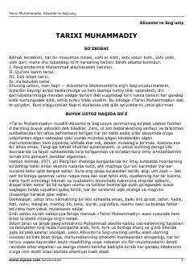

TMPayg'ambarimiz hayoti va islom tarixiga bag'ishlangan fundamental asar.
Mazkur asar Payg'ambarimiz Muhammad alayhissalom hayotlari, Qur'oni karim, dini Islom va Ka'batulloh tarixi haqida hikoya qiluvchi fundamental manbadir. Alixonto'ra Sog'uniy tomonidan ochiq va tushunarli tilda yozilgan ushbu kitob islom tarixi bo'yicha eng muhim o'zbek tilidagi manbalardan biri hisoblanadi.